Start here
Focus runs in your web browser, so there is nothing to install. It keeps working without a connection once it has loaded, and it saves as you go.
- Keep it on your phone: on an iPhone, open Focus in Safari and choose Share → Add to Home Screen. On Android, open it in Chrome and choose Install app or Add to Home screen from the menu.
- Your first visit loads the Working student setup: Study, Work and Sleep timers, Daily routines, a Deadlines list and a few blocks on the calendar. Change any of it in Formats.
- Where things are: on a computer, the sidebar on the left has Home, Lists, Daily, Calendar and Budget, your timers, and at the bottom Formats, Settings (the gear), Export, Import and Reset the day. On a phone, the pages (and Timers) are tabs along the bottom; Formats, Settings and ⋯ (Export, Import, Reset the day) are at the top.
- The tour walks through every section one step at a time. Replay it from Settings → Help → Take the tour.
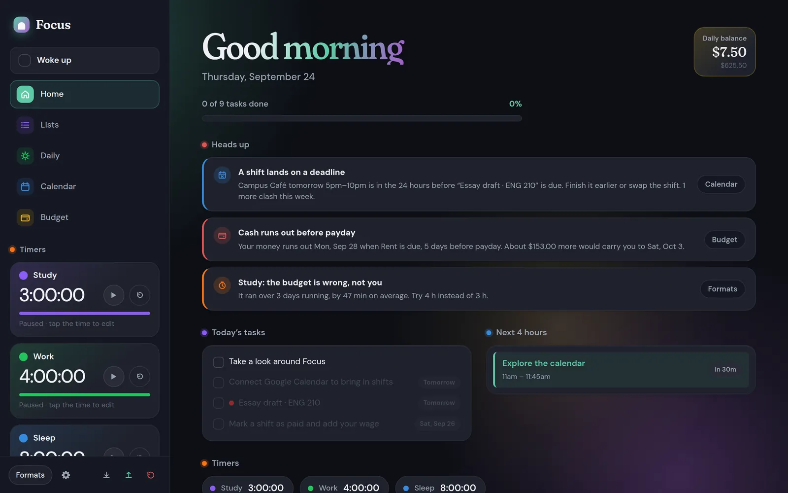
Home and Heads up
Home gathers today in one place: how many of today's tasks are done, the tasks due today, what's on the calendar in the next four hours, your timers, and today's balance from the budget.
Heads up cards appear only when something needs you, and each has a button that goes straight to where you fix it. Focus works these out from your own shifts, deadlines, cash and timers, on your device.
- A shift lands on a deadline: a paid shift in the next week falls in the 24 hours before something on your Deadlines list is due. Deadlines count as due at the end of their day.
- Cash runs out before payday: your cash runway says the money ends before your next paycheck arrives, and roughly how much more would carry you to payday.
- The budget is wrong, not you: a timer ran over its time three days running. Focus suggests a longer time: the old one plus the average overrun, rounded up to a quarter hour.
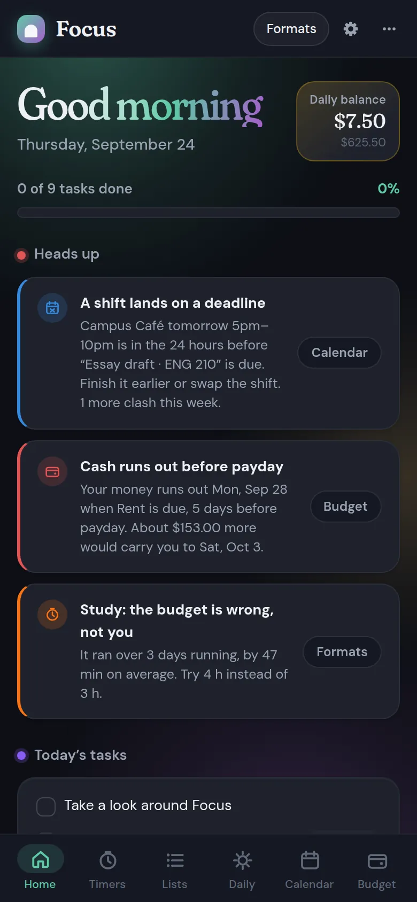
Timers
Each timer is a time budget for something that matters today, like Study or Work.
- Press play to start and pause to stop. Tap the time to change it; the circular arrow resets that timer.
- When a timer passes zero it keeps counting in red, for example +12:34 Over budget, so you see how far over you went.
- Tick Woke up when you get up: Focus then shows how much timer time is left today and when you'd finish if you ran the timers back to back.
- Which timers exist and how long each runs are set in Formats.
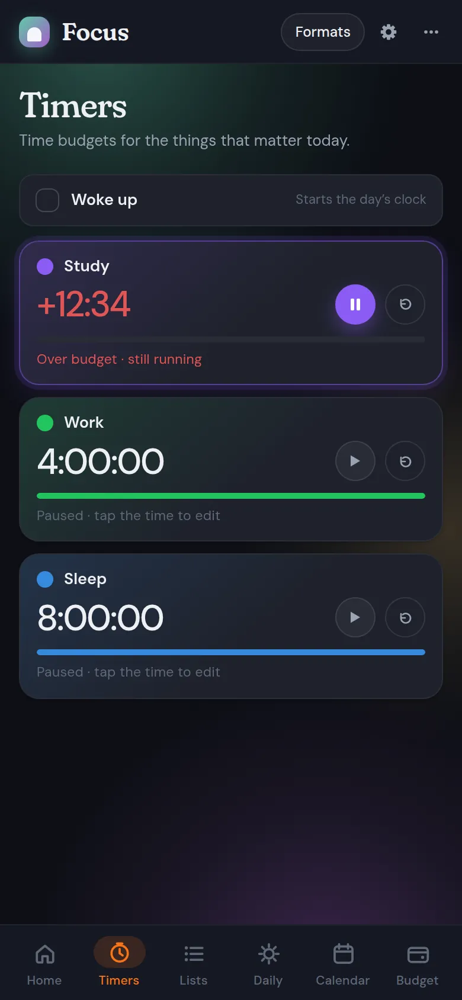
Lists and Day by Day
Day by Day holds tasks with a date. Type the task, pick the date and press + Add. Tasks are grouped by day (Today, Tomorrow, then each date) and show up on Home on their day. Tap a task's date to move it.
Lists are your own collections, under the Lists heading lower on the same page (+ New list). The Tag menu on a dated task files it in one of your lists.
The Working student setup includes a Deadlines list. Put each assignment there with its due date: Home warns you when a shift falls in the 24 hours before it's due.
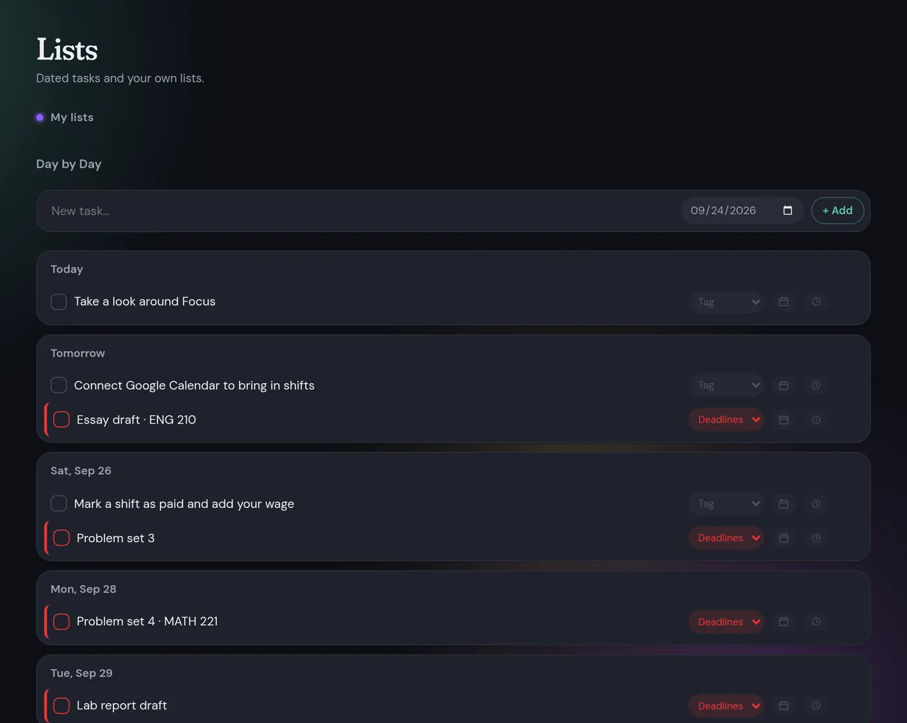
Daily routines
Daily lists are checklists that start fresh every day, like Before class or shift and Wind down. Add to one with + Add task; Reset the day unchecks them all. Which Daily lists exist is set in Formats.
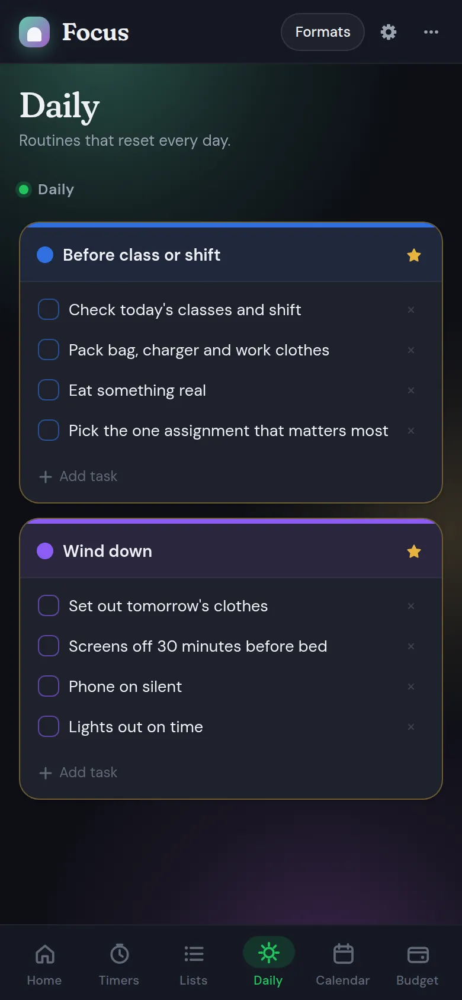
Calendar and shifts
On a computer the calendar shows the next seven days, starting today, and the Sun – Sat button in the sidebar switches to the calendar week. On a phone it shows one day at a time; the arrows move between days. It holds your weekly blocks (set in Formats), events you add, and your Google Calendar events if you connect it. The colored dots at the top hide or show events of that color.
- Add an event: click or tap an empty time on the day. To move an event, drag it.
- Make it a paid shift: in the event, press Paid shift and enter your hourly wage. Focus shows what that shift pays.
- See the week's pay at the top of the calendar, for example “Next 7 days: $225.00 from 4 shifts · 19 h”. A shift without a wage shows a shift tag and isn't counted until you add one.
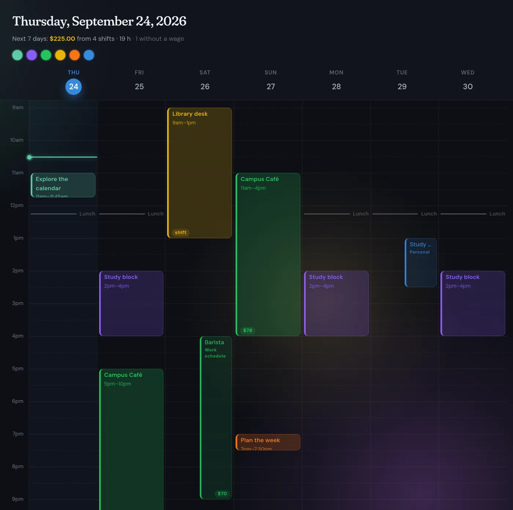
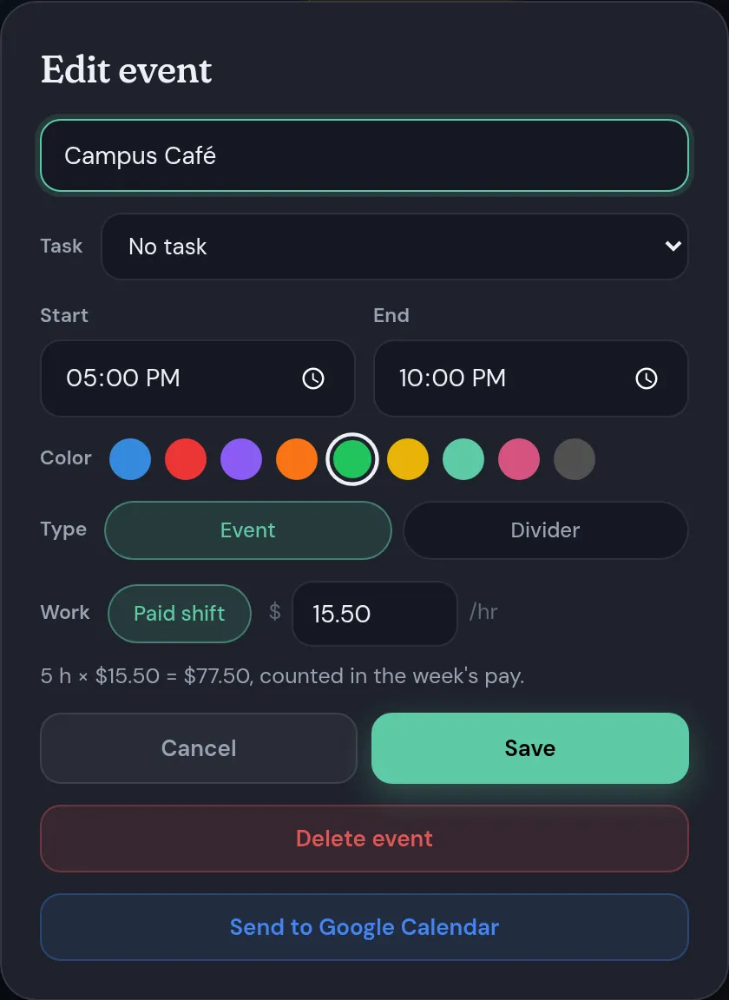
A Divider (like Lunch) is a thin line across the day instead of a block. The Task menu links an event to one of your tasks, and the event takes the task's name.
Google Calendar and work schedules
Connect Google Calendar to see your classes, plans and work schedule next to everything else in Focus.
- Open Settings → Google Calendar and press Connect Google Calendar.
- Choose your Google account and allow access to your calendars. You come back to Focus and your events appear on the calendar.
- Press Manage Google Calendars to choose which calendars show, or to disconnect.
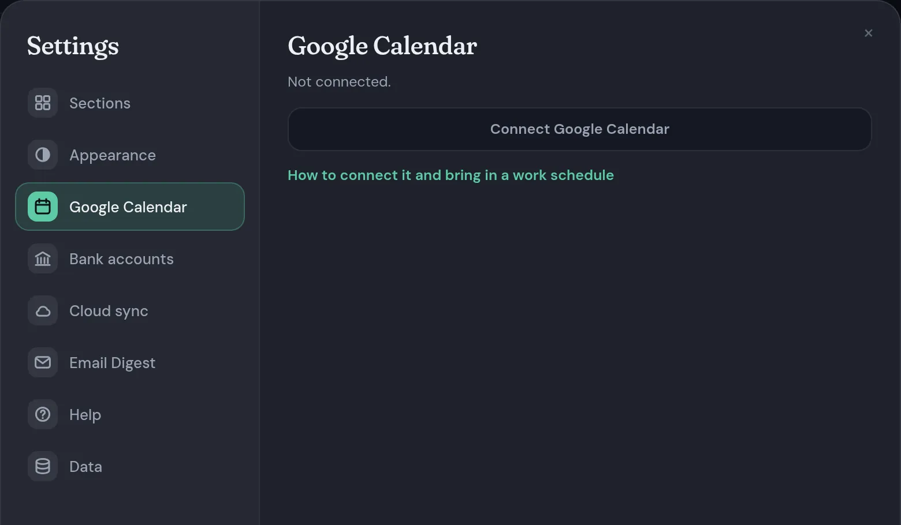
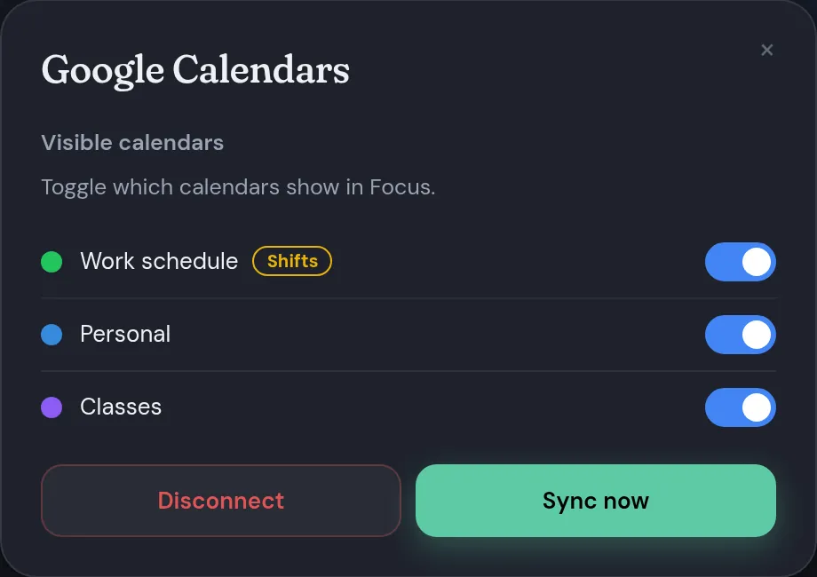
Bring in your work schedule
Most scheduling apps can share your shifts as a calendar link, usually called calendar sync, a calendar feed or iCal. Add that link to Google Calendar once and your shifts show up in Focus by themselves:
- In your scheduling app's settings, find the calendar sync or iCal option and copy the link.
- In Google Calendar on a computer, next to Other calendars press +, choose From URL, paste the link and add it. Google refreshes these calendars on its own schedule, so new shifts can take up to a day to appear.
- In Focus, open one of those shifts on the calendar and turn on Events from “…” are paid shifts, then enter your hourly wage. Every event on that calendar now counts as a paid shift, and the calendar gets a Shifts tag.
A calendar or event named after When I Work, Sling, 7shifts or Homebase counts as shifts without that step; you only add the wage.
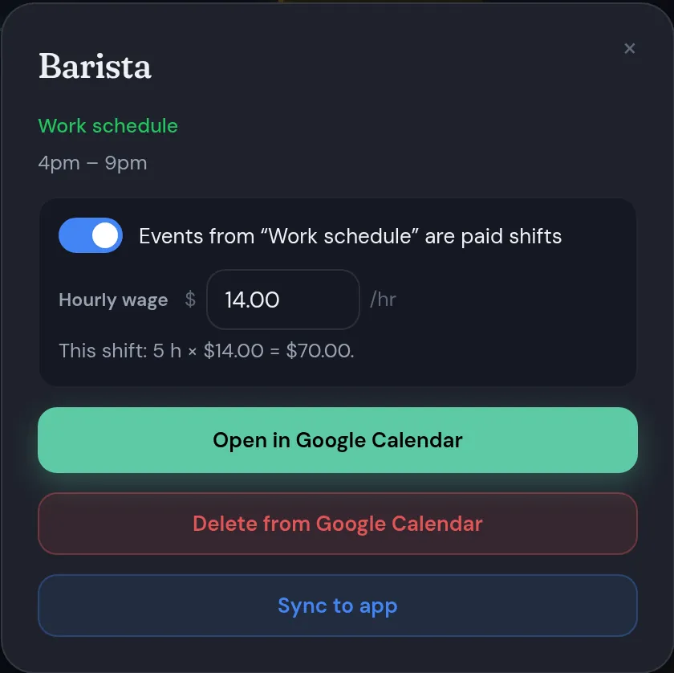
Good to know
- While Google Calendar is connected, events you add in Focus are also added to your first visible Google calendar, and changing or deleting them in Focus changes them there. Press Send to Google Calendar on an older event to add it.
- On a Google event, Delete from Google Calendar deletes it from Google, and Sync to app copies it into Focus.
- The connection belongs to the device where you made it; connect on each device you use.
Budget and cash runway
The budget answers two questions: what can I spend today, and does my cash last until payday?
- Initial balance is your cash this morning. Add each paycheck to it.
- Daily budget is what you let yourself spend a day. Today's balance is what's left of today's amount.
- Purchases today: add what you buy and it comes off today's balance and your total.
Cash runway
Enter your next payday, how often you're paid, and your monthly bills with the day each is due. Focus walks forward day by day: each day costs your daily budget, each bill comes out on its day, and pay for the shifts you work before payday arrives on payday. It tells you how many days of cash you have and, if the money runs out first, on which day and why.
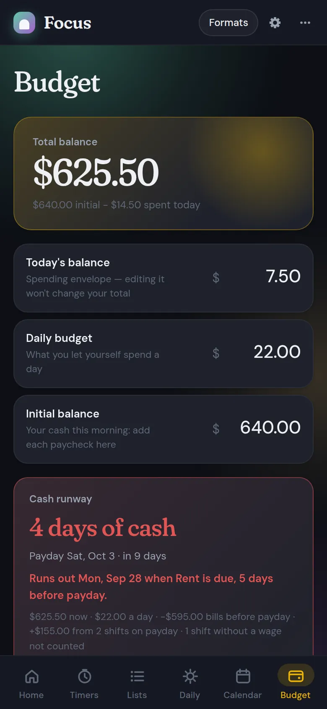
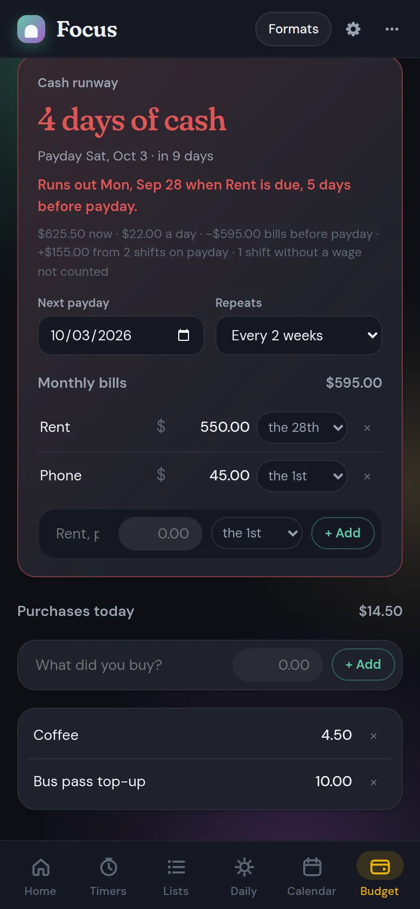
Cloud sync
Without cloud sync, everything stays on the device you're using. With it, your phone and computer show the same data: sign in with the same Google account on each one.
- Open Settings → Cloud sync and press Sign in with Google.
- Choose your Google account. Focus asks Google only for your basic profile: name, email address and picture. You come back to Focus, see Cloud sync connected, and the line reads “Syncing as you@… · last sync time”.
- Sign in the same way on your other devices. If a device already has different data, Focus asks which copy to keep:
- Import from cloud replaces this device's data with the cloud copy. Choose it on a new device to get the data you already have.
- Export to cloud replaces the cloud copy with this device's data.
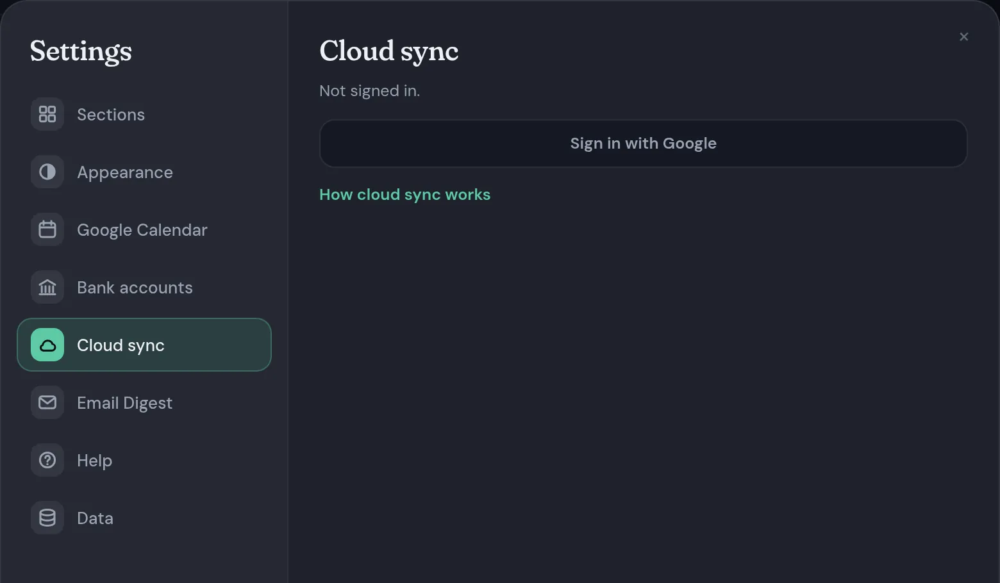
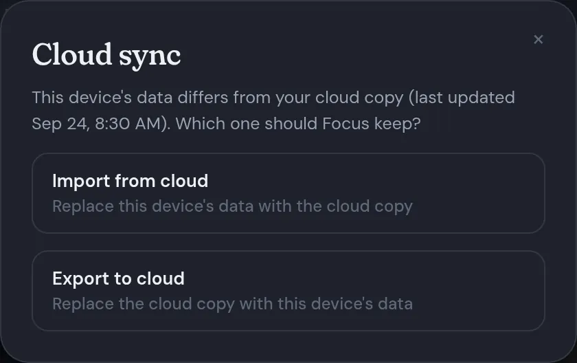
- What syncs: timers and their history, lists and tasks, Daily routines, the calendar and its weekly blocks, shifts and wages, the budget, payday and bills, your theme and which sections show, and the email digest.
- What stays on each device: the Google Calendar connection, bank connections, and the GitHub token for the digest.
- While Formats is open, sync waits until you press Done.
- Sign out in the same place. Your data stays on the device and in the cloud.
Cloud sync uses Firebase. If the Cloud sync line says Not configured, create a Firebase project with a Realtime Database and Google sign-in, paste its web config into FIREBASE_CONFIG in js/config.js, and use database rules that let each person read and write only their own record, users/<their uid>. Sign-in uses the Google OAuth client in GCAL_CLIENT_ID; if that client belongs to a different Google Cloud project, add its client ID to the Google provider's safelist in Firebase Authentication.
Bank accounts
Connect a bank to see your accounts, balances and recent transactions in Settings → Bank accounts. The connection is read-only: Focus can't move money.
Banks connect through Plaid, a service many budgeting and payment apps use. You log in to your bank in Plaid's window, so Focus never sees your bank password. A small relay server holds this copy of Focus's Plaid keys and passes requests along; it stores nothing.
- Open Settings → Bank accounts and press Connect a bank.
- Plaid's window opens. Find your bank, log in, and choose the accounts to share. Some banks, such as Chase, Bank of America and Wells Fargo, open their own site for you to approve, then send you back to Focus.
- Your accounts, balances and newest transactions appear. Press Refresh any time for new ones.
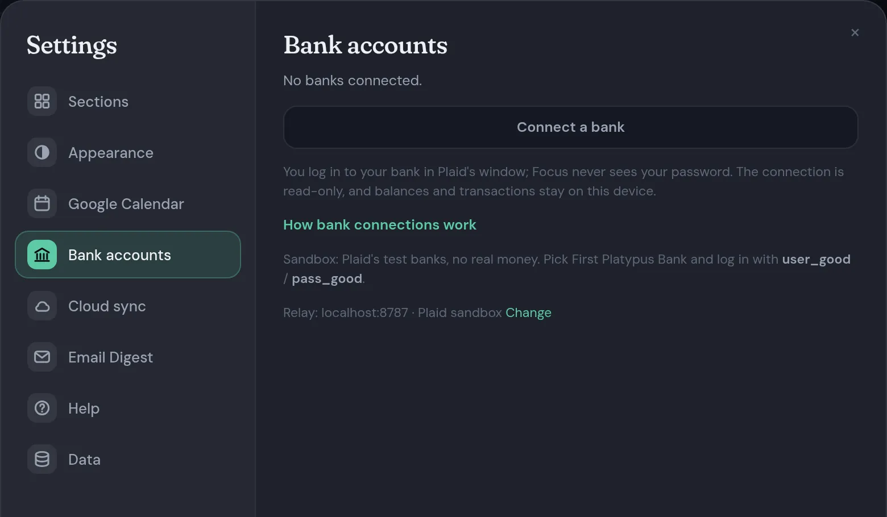
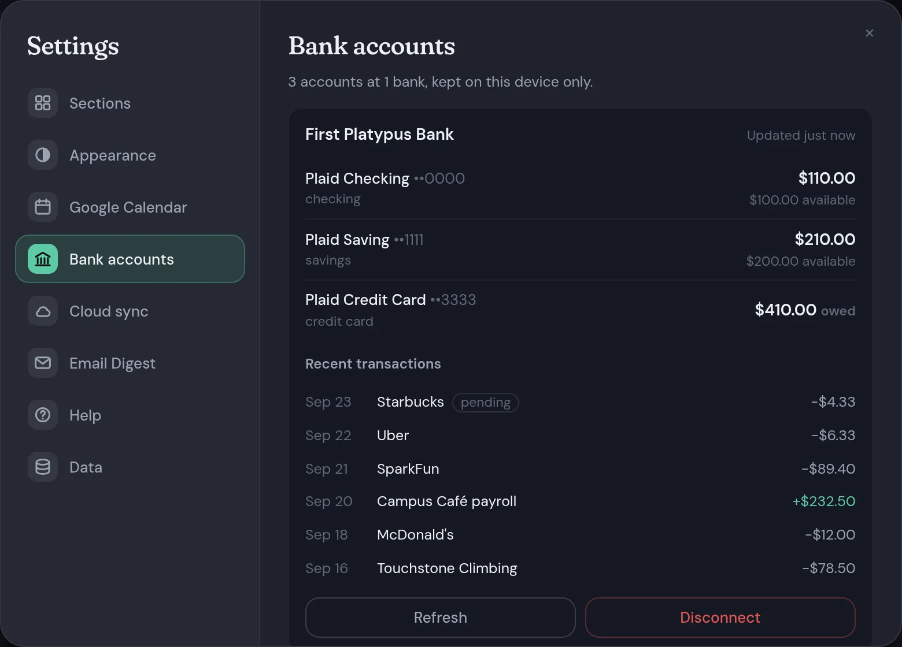
- Disconnect ends the connection at Plaid and deletes it from this device. You can also see and end connections at my.plaid.com.
- Balances and transactions stay on this device: they aren't synced to the cloud or included in Export. Connect on each device where you want to see them.
- If Focus says your bank needs you to log in again, the bank ended the connection. Disconnect it and connect again.
- Testing with the sandbox: pick First Platypus Bank and log in with
user_good/pass_good. If it asks for a code, use1234. No real money is involved.
Set up bank connections (for whoever runs this copy)
If Settings says Not set up on this copy of Focus, there is no relay yet. The relay and its full guide are in backend/bank/README.md. On your computer, in the Focus folder (Node 20 or newer):
- Sign up at dashboard.plaid.com (free) and copy your
client_idand Sandbox secret from Developers → Keys. - Copy the settings file and fill it in:
PLAID_CLIENT_ID,PLAID_SECRET, and aRELAY_KEYfrom the second command.cp backend/bank/.env.example backend/bank/.env node -e "console.log(require('crypto').randomBytes(32).toString('base64'))" - Prove the connection works without a browser. It should end with
End to end: OK.npm run bank:check - Run the app and the relay together, open http://localhost:8787, go to Settings → Bank accounts, enter the relay address
http://localhost:8787/api/bank, press Save, then Connect a bank.npm run bank
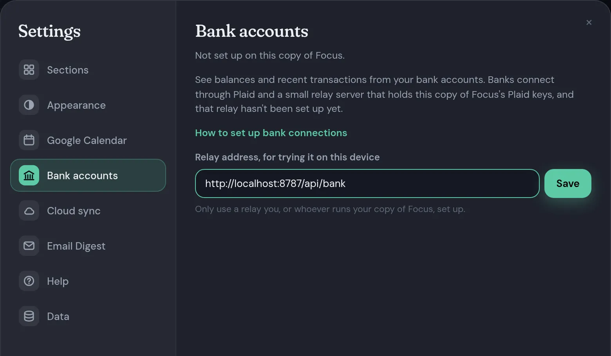
To turn bank connections on for everyone, put the relay online (it runs on Cloudflare Workers' free plan: npx wrangler deploy in backend/bank) and set BANK_RELAY_URL in js/config.js to its address. Real banks need Plaid's Trial plan (up to 10 bank logins) or Production access. Read the README's list of what to do before other people's bank data goes through it.
Email digest
The digest is optional and off until it's set up. Every morning around 6:30 (Central time), a GitHub Actions workflow in the worky repository reads the last day of Gmail, writes a short summary with a language model it runs itself, and delivers it to Home through cloud sync. Nothing on your device reads mail.
- Suggested tasks sit at the top of the card: Add makes one a Day by Day task with its date, × dismisses it, Add all takes them all.
- Settings → Email Digest turns the card on or off, and Load sample shows what a digest looks like.
- To start a digest now instead of waiting for the morning, add a GitHub token under Run it from this device and press Run now. The token stays on that device.
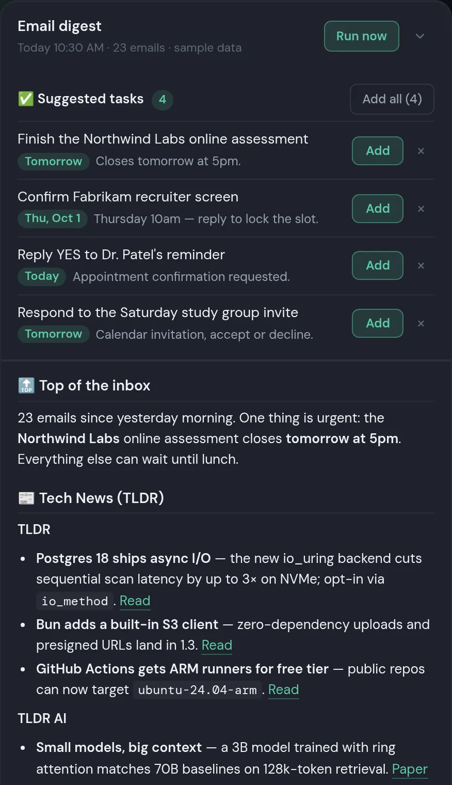
Setting it up for a copy of Focus is described in EMAIL_DIGEST.md.
Formats and templates
Formats edits your defaults: which timers exist and how long each runs, which Daily routines there are, and the weekly blocks on your calendar. Press Formats; the page shows Editing defaults. Make your changes and press Done to save them. Reset the day goes back to these defaults.
Templates (the button next to Done) are ready-made setups: Working student, Classic, Deep Work, Fitness, Creative, and Faith & Family. A template replaces your timers, Daily routines and weekly blocks, and can switch to its matching theme. Your own lists, Day by Day and budget are kept. Edit anything before pressing Done.
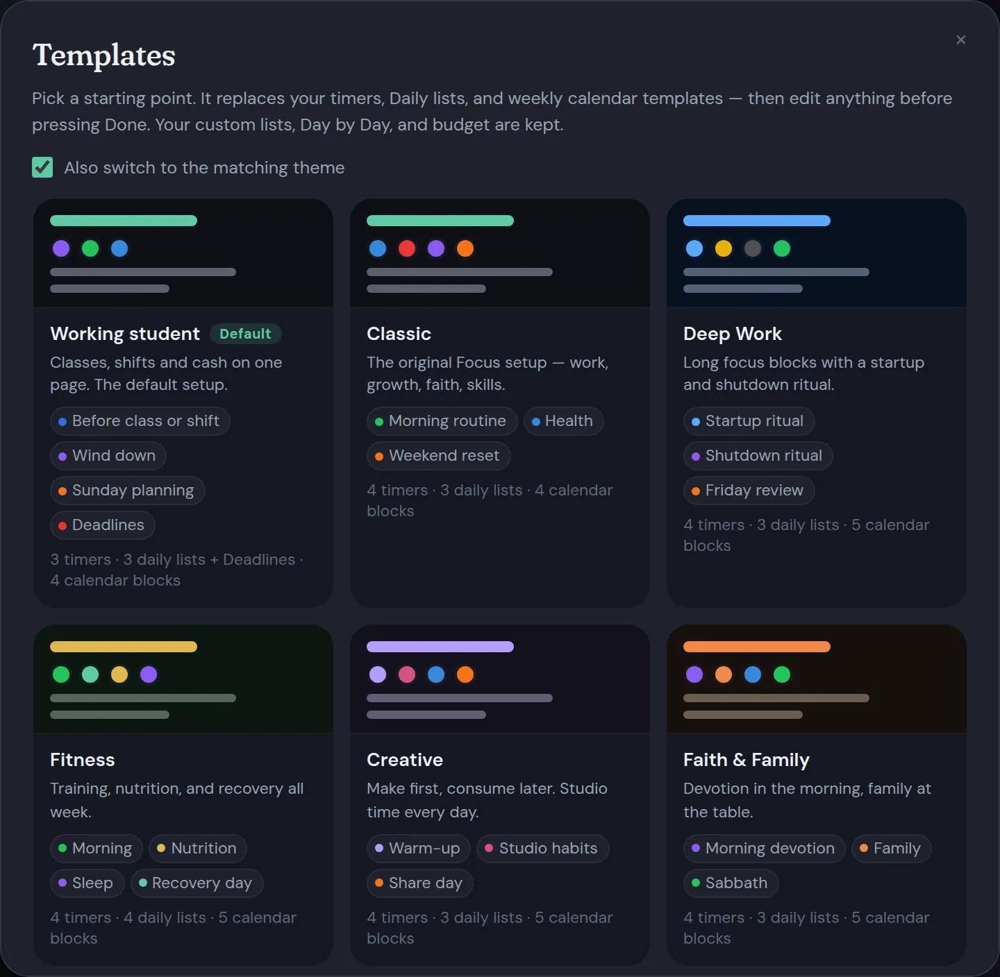
Your data
- Focus saves as you go, in this browser on this device. Turn on cloud sync to keep your devices in step.
- Export copies all your data to the clipboard or downloads it as a
.jsonfile. Import loads it back on any device, from pasted text or the file. - Reset the day puts timers back to their defaults and unchecks Daily tasks. Your lists stay as they are.
- Settings → Data → Clear storage wipes everything Focus saved on this device and starts fresh. Disconnect any bank first, because once storage is cleared Focus can't end that connection at Plaid. A cloud copy, if you have one, is not touched.
- Settings → Sections hides the parts of Focus you don't use, and Settings → Appearance picks a theme or builds your own.
Privacy policy
Last updated: September 24, 2026
This policy explains what data Focus (also called Worky) touches and what happens to it. The short version: your data stays yours, on your device and, if you turn on sync, in your own cloud account. It is used only to show you your own information. Nothing is sold, and there are no ads or analytics.
Data stored in the app
Your tasks, lists, timers and their history, calendar entries, shifts and wages, budget, payday and bills, theme and settings are stored in your browser's local storage on each device you use. Focus has no contacts or address book and doesn't ask for anyone else's information: it stores dates, amounts and the text you type.
Cloud sync and Google sign-in
If you sign in with Google to turn on sync, the same data is also stored in a Firebase Realtime Database (operated by Google) under your account, so your other devices can read it. The database rules allow access only to the signed-in account that owns it. Sign-in uses Firebase Authentication with your Google account: Focus receives your Google account identifier, email address and basic profile (name and picture) to connect your synced data to you. It never receives your password.
Google Calendar
Connecting Google Calendar is optional. If you connect it, Focus asks for access to your Google calendars (the calendar permission, which covers reading and editing events). Focus uses it only to:
- show events from the calendars you choose, next to your own;
- add, change or delete events in Google Calendar when you add, change or delete them in Focus, and delete a Google event when you press Delete from Google Calendar.
The access key stays in the browser on the device where you connected; it is not synced. Google events are loaded while you use Focus and are not saved in your Focus data, except an event you copy in with Sync to app. Which calendars count as shifts, and their wages, are saved with your data.
Gmail access for the email digest
The email digest is optional and off by default. If you connect Gmail, Focus requests the gmail.readonly permission, which lets it read your mail but never send, modify or delete anything. It is used only to:
- read the emails from the last 24 hours (excluding spam and trash),
- produce a short daily summary and a list of suggested tasks,
- store that summary, not the emails themselves, with your synced data so you can read it on any device.
Summaries are generated by an open-source language model that we run ourselves, either on your own computer or on a temporary cloud worker that is discarded after each run. Your email content is not sent to any third-party AI service. Email bodies are processed in memory and are not kept after the summary is produced.
Google API data
Focus's use of information received from Google APIs adheres to the Google API Services User Data Policy, including the Limited Use requirements. Calendar and Gmail data are used only to provide the features you turned on. They are never used for advertising, never sold, and never read by a person except with your explicit permission for support or as required by law.
Bank accounts
Connecting a bank is optional. Bank connections go through Plaid Inc. You log in to your bank in Plaid's window; Focus never receives your bank username or password. With your permission, Focus asks Plaid for read-only transaction data:
- account names and types, the last four digits of account numbers, and balances;
- transactions: date, description or merchant, amount, category, and whether it's pending. The last 30 days come in when you connect, then new ones.
This data travels from Plaid through Focus's relay server to your device. The relay has no database and keeps none of it; it holds Focus's Plaid keys. The key to your connection is encrypted so that only the relay can use it, and it is kept on your device. On your device, Focus keeps the accounts, balances and newest 50 transactions for each bank. Bank data is never synced to the cloud or included in Export.
Plaid handles your data under the Plaid End User Privacy Policy. Disconnect in Settings → Bank accounts ends the connection at Plaid and deletes the bank data from your device. You can also see and end connections at my.plaid.com.
What is not collected
- No analytics, tracking pixels or advertising identifiers.
- No contacts, location, or bank passwords.
- No data is sold, rented, or shared with third parties beyond the services below.
- No data is used to train machine-learning models unless you explicitly opt in to a future feature that says so.
Third-party services
These providers process data for Focus under their own privacy policies:
- GitHub hosts the app on GitHub Pages and runs the email digest on GitHub Actions (privacy statement).
- Google provides sign-in and sync through Firebase (Firebase privacy), the Google Calendar and Gmail APIs if you connect them, and the app's fonts through Google Fonts, which your browser loads from Google (Google privacy policy).
- Plaid connects bank accounts, if you connect one (Plaid End User Privacy Policy).
- The bank relay runs on a hosting service, such as Cloudflare Workers, when bank connections are turned on for this copy of Focus (Cloudflare privacy policy).
Retention and deletion
Your data is kept for as long as you use the app. You can delete it at any time:
- Data on a device: clear the site's data in your browser's settings, or use Settings → Data → Clear storage.
- Synced data: email the address below to have your cloud record deleted. Signing out stops syncing but leaves the cloud copy in place.
- Google access (sign-in, Calendar and Gmail): revoke it at myaccount.google.com/permissions. Focus loses access immediately and no further digests are generated.
- Bank connections: Disconnect in Settings → Bank accounts, or end them at my.plaid.com.
Changes
If this policy changes, the date at the top will be updated. Material changes to how Gmail, Google Calendar or bank data is handled will be announced inside the app before they take effect.
Contact
Questions or deletion requests: justhan47@gmail.com.
↑ Back to the top